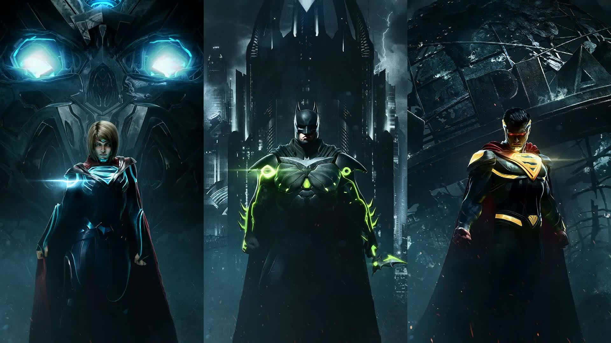
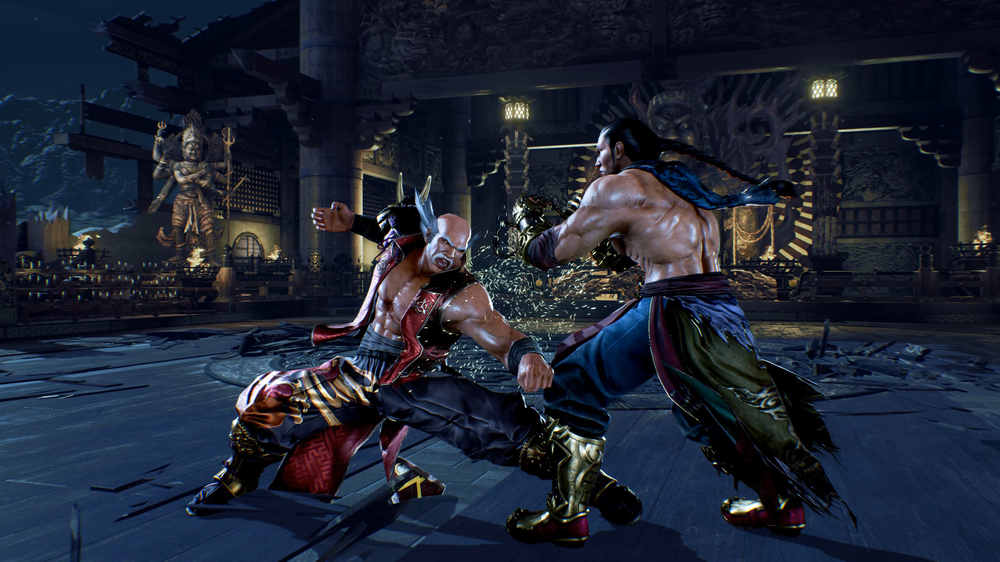
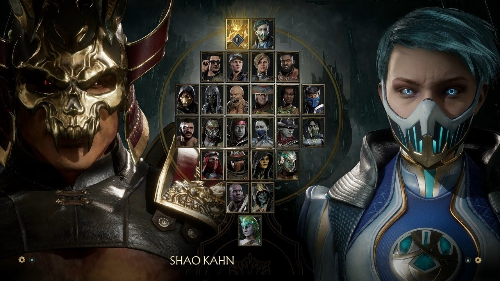
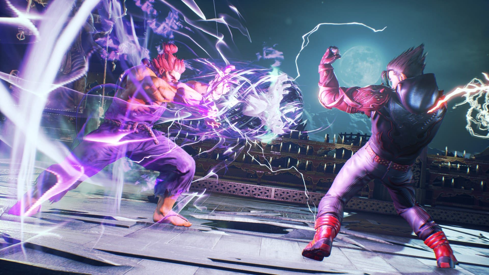
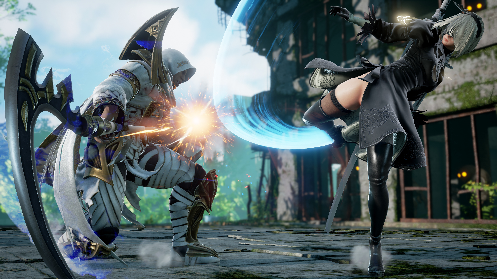
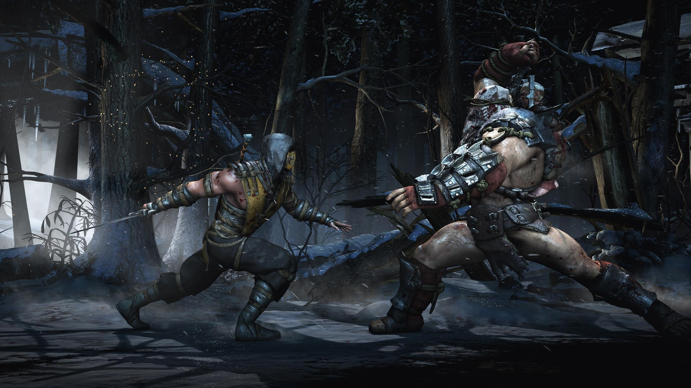

Fighting games
Fighting games are a type of action game where two (or sometimes more) on-screen characters fight each other. These games typically feature special moves that are triggered using rapid sequences of carefully timed button presses and joystick movements. Games traditionally show fighters from a side-view, even as the genre has progressed from two-dimensional (2D) to three-dimensional (3D) graphics.
Street Fighter II, though not the first fighting game, popularized and standardized the conventions of the genre, and similar games released prior to Street Fighter II have since been more explicitly classified as fighting games. Fighting games typically involve hand-to-hand combat, but may also feature melee weapons.
Fighting games involve combat between pairs of fighters using highly exaggerated martial arts moves. They typically revolve around primarily brawling or combat sport, though some variations feature weaponry. Games usually display on-screen fighters from a side view, and even 3D fighting games play largely within a 2D plane of motion. Games usually confine characters to moving left and right and jumping, although some games such as Fatal Fury: King of Fighters allow players to move between parallel planes of movement. Recent games tend to be rendered in three dimensions and allow side-stepping, but otherwise play like those rendered in two dimensions.
Street Fighter II, though not the first fighting game, popularized and standardized the conventions of the genre, and similar games released prior to Street Fighter II have since been more explicitly classified as fighting games. Fighting games typically involve hand-to-hand combat, but may also feature melee weapons.
Fighting games involve combat between pairs of fighters using highly exaggerated martial arts moves. They typically revolve around primarily brawling or combat sport, though some variations feature weaponry. Games usually display on-screen fighters from a side view, and even 3D fighting games play largely within a 2D plane of motion. Games usually confine characters to moving left and right and jumping, although some games such as Fatal Fury: King of Fighters allow players to move between parallel planes of movement. Recent games tend to be rendered in three dimensions and allow side-stepping, but otherwise play like those rendered in two dimensions.
Matches and rounds
Fighting game matches generally consist of several rounds (typically "best-of-three"); the player who wins the set number of rounds wins the match. If the score is tied after an even number of rounds, then the winner will be decided in the final round. Round decisions can also be determined by time over (if a timer is present), which judge players based on remaining vitality to declare a winner. In a Super Smash Bros. match, if the score is tied between two or more fighters when time expires, then a "sudden death" match will decide the winner.

Character selection
In most fighting games, players may select from a variety of playable characters who have unique fighting styles and special moves. This became a strong convention for the genre with the release of Street Fighter II, and these character choices have led to deeper game strategy and replay value. Although fighting games offer female characters, their image tends to be hypersexualized, and they have even been featured as pin-up girls in game magazines; in many games they also exhibit exaggerated "breast physics". Male characters in fighting games tend to have extra-broad chests and shoulders, huge muscles, and prominent jaws.

Tactics and combos
Aside from moving around a restricted space, fighting games limit the player's actions to different offensive and defensive maneuvers. Players must learn which attacks and defenses are effective against each other, often by trial and error. Blocking is a basic technique that allows a player to defend against basic attacks. Some games feature more advanced blocking techniques: for example, Capcom's Street Fighter III features a move termed "parrying" which causes the parried attacker to become momentarily incapacitated (a similar state is termed "just defended" in SNK's Garou: Mark of the Wolves).

Special attacks
An integral feature of fighting games includes the use of "special attacks", also called "secret moves", that employ complex combinations of button presses to perform a particular move beyond basic punching and kicking. Combos, in which several attacks are chained together using basic punches and kicks, are another common feature in fighting games and have been fundamental to the genre since the release of Street Fighter II. Some fighting games display a "combo meter" that displays the player's progress through a combo. The effectiveness of such moves often relate to the difficulty of execution and the degree of risk.
These moves are often beyond the ability of a casual gamer and require a player to have both a strong memory and excellent timing. Taunting is another feature of some fighting games and was originally introduced by Japanese company SNK in their game Art of Fighting. It is used to add humor to games, but can also have an effect on gameplay such as improving the strength of other attacks. Sometimes, a character can even be noted especially for taunting (for example, Dan Hibiki from Street Fighter Alpha). Super Smash Bros. Brawl introduced a new special attack that is exclusive to the series known as a Final Smash.
These moves are often beyond the ability of a casual gamer and require a player to have both a strong memory and excellent timing. Taunting is another feature of some fighting games and was originally introduced by Japanese company SNK in their game Art of Fighting. It is used to add humor to games, but can also have an effect on gameplay such as improving the strength of other attacks. Sometimes, a character can even be noted especially for taunting (for example, Dan Hibiki from Street Fighter Alpha). Super Smash Bros. Brawl introduced a new special attack that is exclusive to the series known as a Final Smash.

Multiplayer modes
Fighting games may also offer a multiplayer mode in which players fight each other, sometimes by letting a second player challenge the first at any moment during a single-player match. A few titles allow up to four players to compete simultaneously. Uniquely, the Super Smash Bros. series has allowed eight-player local and online multiplayer matches, beginning with Super Smash Bros. for Wii U and continuing with Super Smash Bros. Ultimate, although many consider Super Smash Bros. to be an arena platform combat subgenre due to its deviation from traditional fighting game rules and design.
Several games have also featured modes that involve teams of characters; players form "tag teams" to fight matches in which combat is one-on-one, but a character may leave the arena to be replaced by a teammate. Some fighting games have also offered the challenge of fighting against multiple opponents in succession, testing the player's endurance.
Newer titles take advantage of online gaming services, although lag created by slow data transmission can disrupt the split-second timing involved in fighting games. The impact of lag in some fighting games has been reduced by using technology such as GGPO, which keeps the players' games in sync by quickly rolling back to the most recent accurate game state, correcting errors, and then jumping back to the current frame. Games using this technology include Skullgirls and Street Fighter III: 3rd Strike Online Edition.
Several games have also featured modes that involve teams of characters; players form "tag teams" to fight matches in which combat is one-on-one, but a character may leave the arena to be replaced by a teammate. Some fighting games have also offered the challenge of fighting against multiple opponents in succession, testing the player's endurance.
Newer titles take advantage of online gaming services, although lag created by slow data transmission can disrupt the split-second timing involved in fighting games. The impact of lag in some fighting games has been reduced by using technology such as GGPO, which keeps the players' games in sync by quickly rolling back to the most recent accurate game state, correcting errors, and then jumping back to the current frame. Games using this technology include Skullgirls and Street Fighter III: 3rd Strike Online Edition.
